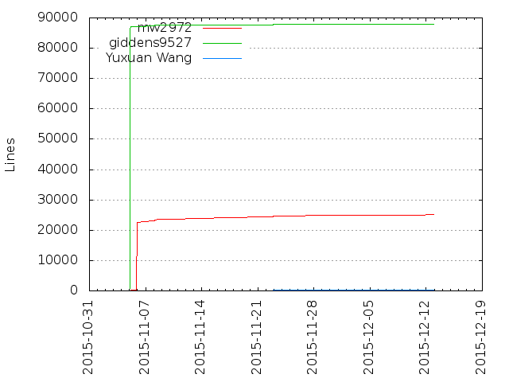

Authors
| Author | Commits (%) | + lines | - lines | First commit | Last commit | Age | Active days | # by commits |
|---|
| mw2972 | 94 (57.67%) | 25249 | 133442 | 2015-11-04 | 2015-12-12 | 37 days, 21:57:55 | 19 | 1 |
| giddens9527 | 56 (34.36%) | 87973 | 85319 | 2015-11-04 | 2015-12-12 | 37 days, 20:50:23 | 8 | 2 |
| Yuxuan Wang | 13 (7.98%) | 327 | 10 | 2015-11-09 | 2015-11-22 | 12 days, 18:18:12 | 2 | 3 |

| Month | Author | Commits (%) | Next top 5 | Number of authors |
|---|
| 2015-12 | mw2972 | 15 (65.22% of 23) | giddens9527 | 2 |
| 2015-11 | mw2972 | 79 (56.43% of 140) | giddens9527, Yuxuan Wang | 3 |
| Year | Author | Commits (%) | Next top 5 | Number of authors |
|---|
| 2015 | mw2972 | 94 (57.67% of 163) | giddens9527, Yuxuan Wang | 3 |
| Domains | Total (%) |
|---|
| columbia.edu | 107 (65.64%) |
|---|
| gmail.com | 56 (34.36%) |
|---|